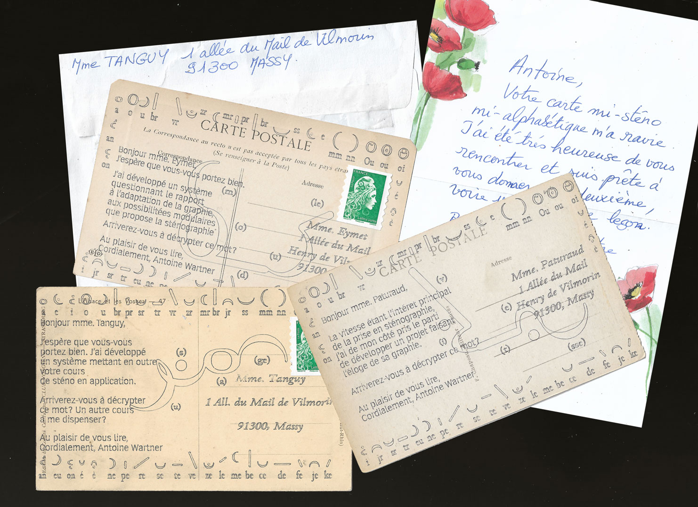
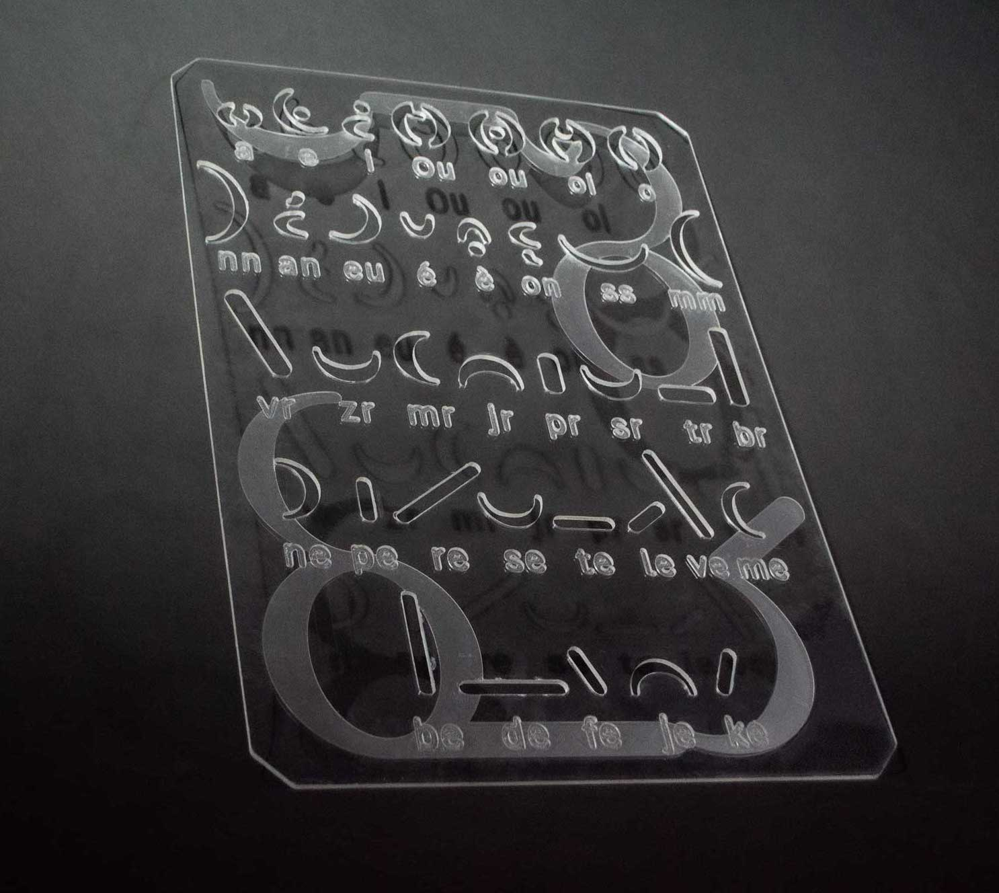
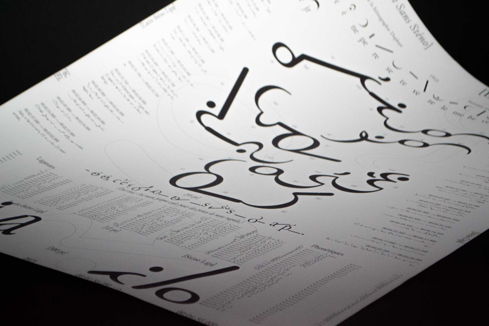
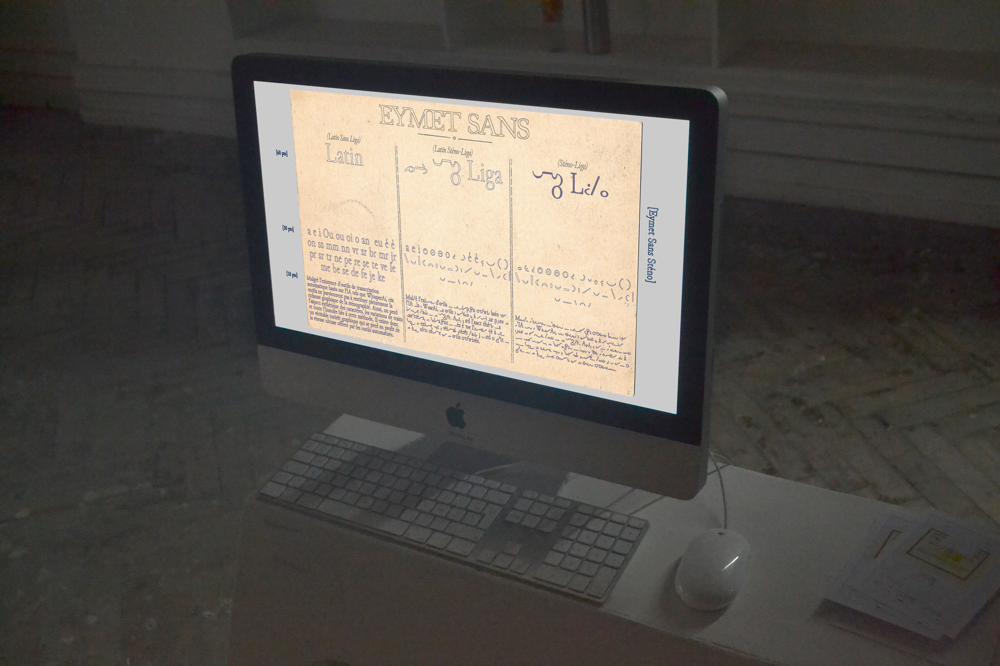

[Type Design]
Eymet Sans Sténo
2023
MA Project




The development of EYMET SANS is based on a phonetic alphabet and an OpenType ligature system to reproduce the composition of stenograms, following the French Duployé method an archive documents printed in 1912. The extensive nature of the project calls for a dictionary or glossary of the used terms, along with a synthesis of the conversations.
Born from a serie of 6 interviews with ancient short-hand writters, this project takes a look at writing and aspects surrounding it to allow us to question the value of a graphic system, to understand obsolescence, to go through a history of methods. It explores the heritage of a graphic system blown away by the quest for ultimate speed.
Born from a serie of 6 interviews with ancient short-hand writters, this project takes a look at writing and aspects surrounding it to allow us to question the value of a graphic system, to understand obsolescence, to go through a history of methods. It explores the heritage of a graphic system blown away by the quest for ultimate speed.
A1 engraved plexiglas Alphabet Stencil
Digital specimen HTML, CSS, Js
A0 poster, Numerique Printing
Pen plotter Print on vintage letters 14×9cm
& long format 30×6000cm [index]
Hear, Communication graphique followed by Kevin Donnot & Yohanna My Nguyen